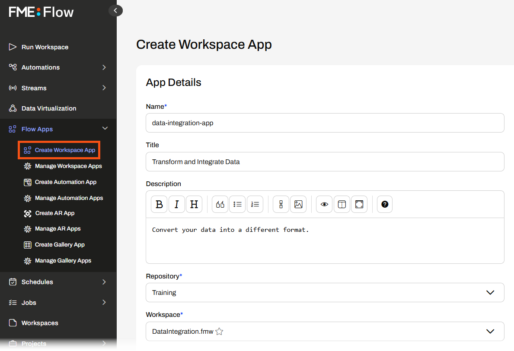
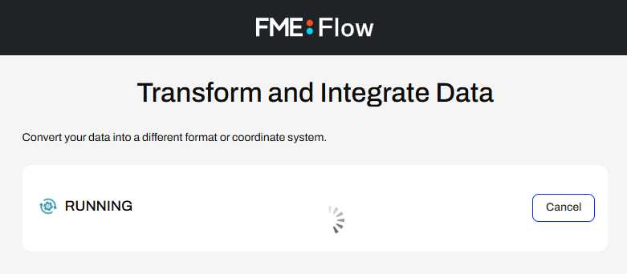
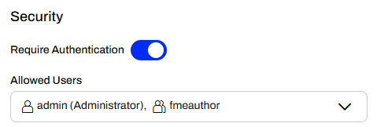
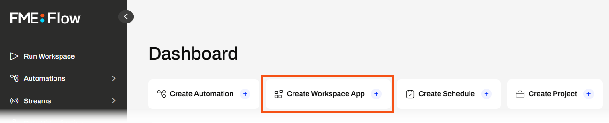
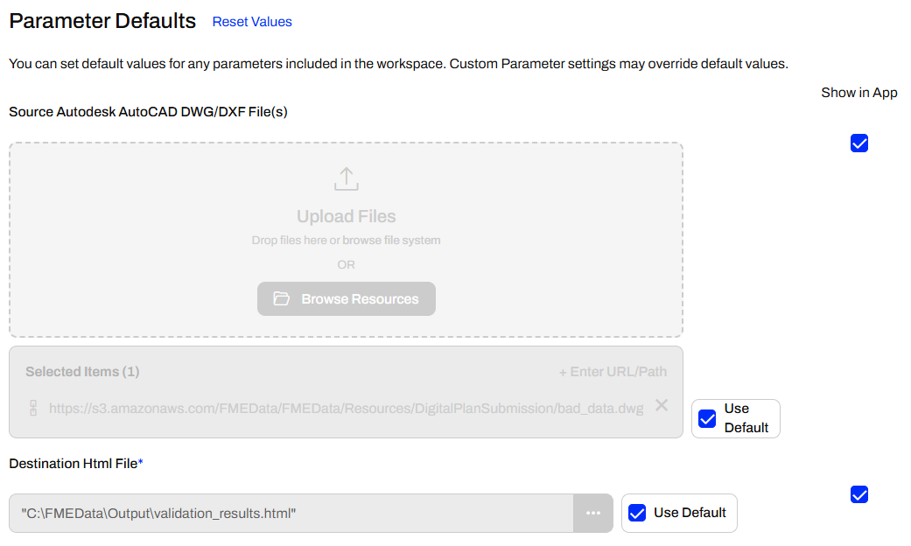
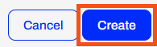
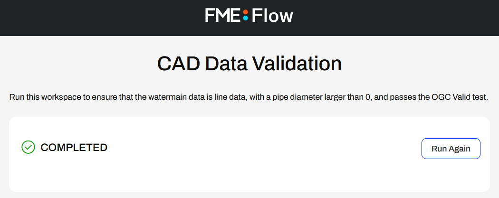
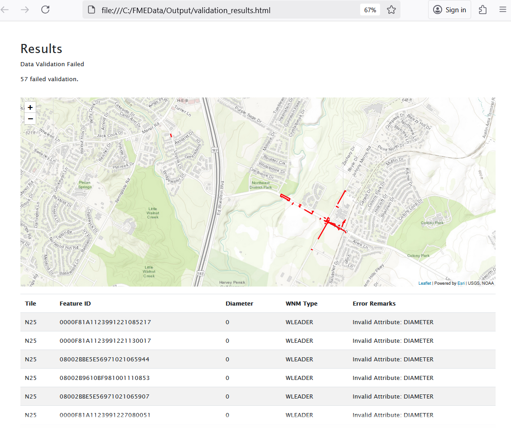

Learning Objectives
After completing this lesson, you'll be able to:
- Create a Workspace App.
- Run a Workspace App with the Job Submitter service.
Resources
- Starting FME Flow project | C:\FMEData\Workspaces\CreateDataIntegrationApps\create-data-integration-apps--starting-project.fsproject
If you're taking a live Safe Software-hosted training course or using an on-demand lab for this course, we've already imported the content for this lesson into your FME Flow.
If you're completing this lesson with your own FME Flow, you must import the starting project with the content into your FME Flow.
Expand for Steps to Import the Starting Project
2) Upload the
create_data_integration_apps.jceks encryption key to your FME Flow. This must be done by an fmesuperuser who has permission to System Configuration > Security > System Encryption. For more information, see our documentation on
System Encryption.
3) Navigate to your FME Flow and open Projects. Click Import.
5) The first step is Preview Content, where you may choose not to overwrite existing items. If all your items are New Items, you don't need to worry about overwriting existing items. Click Continue.
6) The next step is to select connections and tokens to import. This project doesn't contain any connections, parameters, tokens, or users to import. Click Continue through Step 2 and Step 3. Click Import Project on Step 4. The project will import and display its import status from the same page.
If the project import failed, check that you uploaded the encryption key and repeat the process. If the issue persists, please contact us at train@safe.com.
Creating Workspace Apps
FME Flow Workspace Apps provide a simple means of sharing FME workspaces with other users, allowing them to access FME functionality without prior FME experience. To create a Workspace App, you fill out a form that selects the workspace, its transformation service, parameters to take user input, and any customization options.

Once you create a Workspace App, FME Flow generates a URL that opens a web-based form, referred to as an app. You can click the link to open it in your browser, copy it to share, or embed it in another website.

The simple app interface does not require users to have any FME knowledge or even understand what an FME workspace is. You fill out the parameter values, if any, and click Run to run the workspace.


Some example parameters include input source files, text or numeric values, choices to filter data, output file information, and more. We will cover more on parameters later in this learning path. To learn more about parameters in FME Flow, see the Build Self-Serve Workflows with Parameters course.
Once you click Run, FME Flow submits the workspace to an FME Engine to process, just like running a workspace manually on FME Flow. Once the translation completes, FME Flow returns the translation result to you in the app.
 
You may only run one workspace with a Workspace App. To run multiple workspaces either in sequence or in parallel, you should use an Automation App. We will cover Automation Apps later in this learning path. However, to learn more about Automation Apps, see theTrigger Automations through Apps lesson in the Job Orchestration in Automations course.
Accessing Flow Apps
Once you create a Flow App and FME Flow generates a URL to access the app, you use the URL to access the app. You can copy and paste the URL into another browser, send it to a colleague to access the app, or embed it on another website. It's important to remember your intended audience for the app to ensure they have access to it. There are two levels of accessibility permissions you must consider: individual app permissions and FME Flow network access.
When you create your Workspace App, you have the option to Require Authentication. If you toggle this on, you will need to select users and roles you wish to grant access to your app. These users will need to log into FME Flow to access and run your app. If "Require Authentication" is off, anyone with the link can access and run your app without needing to log in to FME Flow.

See our documentation on User Management for more information on users, roles, and permissions on FME Flow.
The next level of Flow App accessibility relates to whether your FME Flow administrator has set up your FME Flow on an internal or external network. While you do not need to know the administration tasks to set up FME Flow, it is crucial to know whether your FME Flow is publicly accessible for app access. If your organization restricts FME Flow to an internal network, you will not be able to access FME Flow or Flow Apps outside of that network. If this is the case and you share your app with users outside your organization, or embed it in a publicly facing website, external users will not be able to access and use your app. If your FME Flow is publicly accessible and you turn off 'Require Authentication' for your app, anyone with access to the app link will be able to access and run your app.
Administration tasks like making FME Flow publicly accessible are outside the scope of this course. For more information, see Enabling FME Flow for Public Access.
Exercise

Jennifer, a GIS specialist, is creating a self-serve data portal. She aims to have her colleagues upload their CAD data and validate it against rules. She will use a Workspace App to share the workflow with her colleagues, allowing them to run the FME workspace without requiring any prior FME experience or knowledge.
Jennifer's workspace reads CAD water line data, runs validation checks on the features, and generates an HTML report, which varies depending on whether the features successfully pass validation or fail the tests.

She has already published her workspace to FME Flow and will now create the Workspace App. Follow along with Jennifer's steps.
1) Navigate to and Log In to FME Flow
Jennifer opens a web browser and navigates to FME Flow. She logs in to FME Flow with her credentials.

How you log into FME Flow will depend on the FME Flow instance you are using.
If you are taking a Safe Software-hosted training course, you can access FME Flow at http://localhost/fmeserver.
- Username: admin
- Password: FMElearnings
If you are not taking a Safe Software-hosted course, have just installed your FME Flow, and haven’t logged in yet, you must use the default username/password, admin/admin. After entering the default username/password, FME Flow will prompt you to create a new password for the admin user account. Then log in using the username admin and your new password. Because this is a fresh install, you must also license FME Flow before continuing; see the FME Flow Licensing Walk-Through for instructions.
If you are using FME Flow Hosted, see these instructions.
2) Create Workspace App
From the FME Flow Dashboard, Jennifer clicks the Create Workspace App shortcut.

The Create Workspace App page opens, and Jennifer starts by giving her app a name and title.

For the Description, Jennifer describes what the workspace does in a sentence.
Run this workspace to ensure that the watermain data is line data, with a pipe diameter larger than 0, and passes the OGC Valid test.
Next, Jennifer selects her workspace. She's stored it in the Data Validation Repository, so she selects it, and then the CAD_Data_Validation.fmw workspace.

Jennifer sets the Service to Job Submitter and leaves the remaining settings at their default values.

Jennifer expands the Parameter Defaults section. The first parameter takes AutoCAD file(s) as input to the workspace, and the second allows the user to define an output location for the HTML report of validation results. Jennifer leaves the parameters set to Use Default and set to Show in App.

Jennifer skips the Customize section, scrolls to the bottom of the form, and selects Create.

3) Open and Run App
FME Flow creates the app and displays a URL and additional security information about it to Jennifer. Jennifer clicks the URL to open the app in a new browser tab.

The app opens and shows the two parameters for the user to configure. Jennifer does not change the default values and clicks Run.

If you cannot access C:\FMEData on the server hosting your FME Flow, change the Destination HTML file parameter to a file location you can access.
FME Flow submits the workspace to an FME Engine, and the app displays that it is Running as FME Flow processes the workspace.

After the translation, FME Flow displays Completed back to Jennifer in the app.

4) Inspect Output
Jennifer navigates to C:\FMEData\Output\ and opens validation_results.html.

The HTML report displays a map of features that failed validation and a table that records each feature and its reason for failing validation.

Jennifer has created a self-serve data portal where users can upload files and run a workspace to validate CAD data.